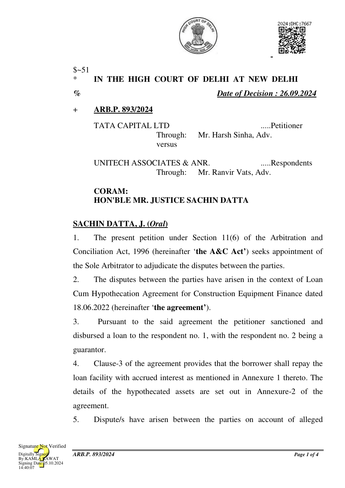
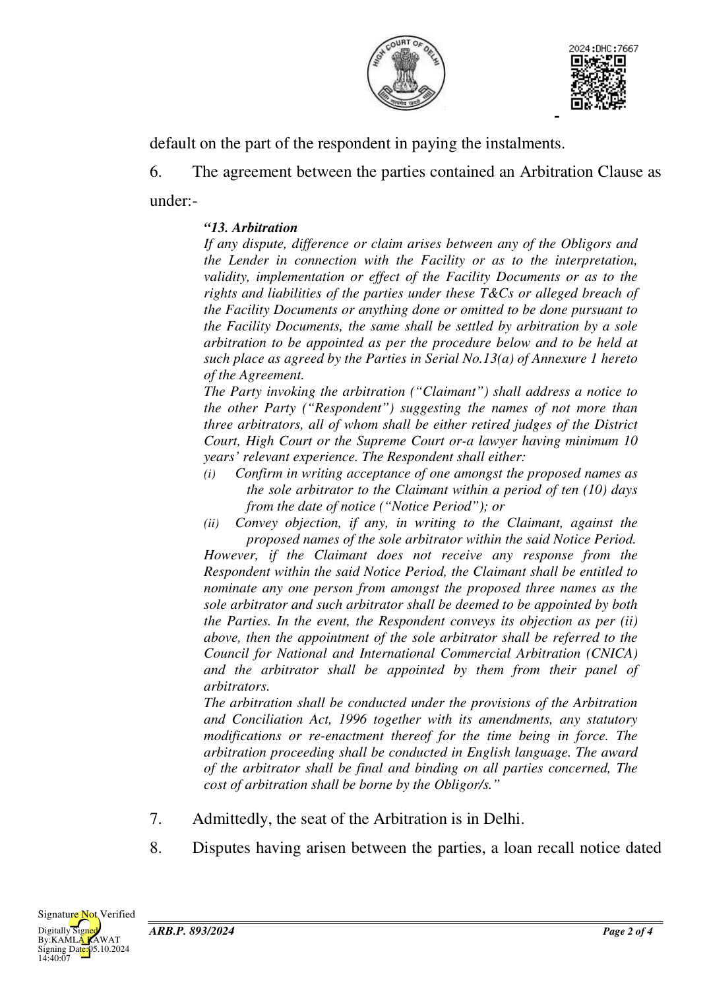

27.06.2023 was issued by the petitioner to the respondent followed by a notice of invocation of arbitration dated 03.04.2024.
- Respective counsels for the parties accede that in terms of the judgment of the Supreme Court in Perkins Eastman Architects DPC v. HSCC (India) Ltd., (2020) 20 SCC 760, it is incumbent on this Court to appoint a Sole Arbitrator to adjudicate the disputes between the parties.
- It is further jointly requested that prior to adjudication of the disputes, the concerned arbitrator be also requested to pursue the possibility of a settlement of disputes between the parties through mediation as contemplated in Section 30 (1) of the A&C Act.
- Accordingly, as jointly prayed, Mr. Pradeep Kumar, Advocate (Mob. No.:9810243924) is appointed as the Sole Arbitrator to adjudicate the disputes between the parties.
- Prior to adjudication of the dispute on merits, the learned Sole Arbitrator is requested to encourage the parties to arrive at a settlement through the mediation or any procedure as may be considered appropriate by the learned Arbitrator, as contemplated under Section 30(1) of the A&C Act.
- The learned Sole Arbitrator may proceed with the arbitration subject to furnishing to the parties requisite disclosures as required under Section 12 of the A&C Act.
- The learned Sole Arbitrator shall be entitled to fee in accordance with the IVth Schedule of the A&C Act; or as may otherwise be agreed to between the parties and the learned Sole Arbitrator.
- Parties shall share the arbitrator’s fee and arbitral cost, equally.
- All rights and contentions of the parties in relation to the claims/counter claims are kept open, to be decided by the learned Sole Arbitrator on their merits, in accordance with law.
- Needless to say, nothing in this order shall be construed as an expression of opinion of this Court on the merits of the case.
- The present petition stands disposed of in the above terms.
SACHIN DATTA, J